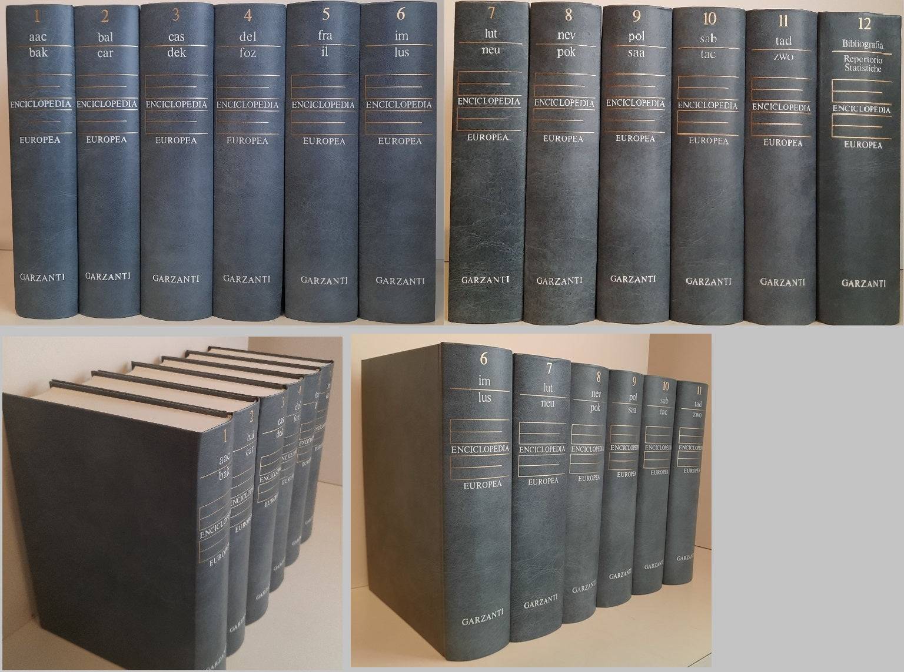
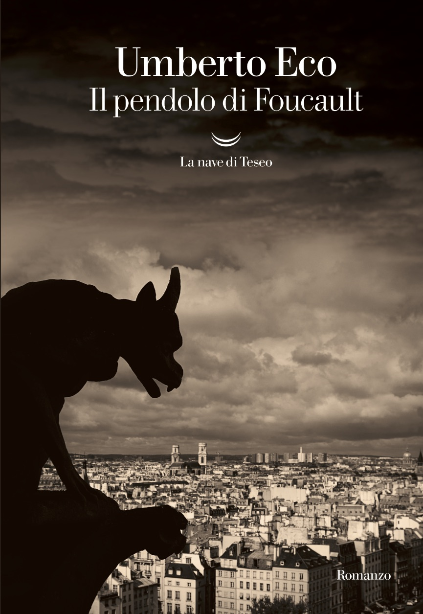
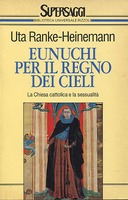
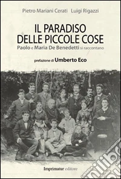

29:20 · 6 OPERE
In ricordo di Paolo De Benedetti (1927-2016).
Il filo del discorso
Il ricordo di Paolo De Benedetti prende avvio dall’invito a un convegno annunciato ad Asti per il primo e il 2 dicembre 2018. Dr Divago presenta lo studioso come interlocutore fra tradizioni ebraiche e cristiane, capace di unire erudizione, brevità della scrittura e generosità nella conversazione. Il richiamo al Concetto di Dio dopo Auschwitz di Hans Jonas introduce un confronto con un testo di De Benedetti il cui titolo non è riconoscibile nel parlato. Seguono il lavoro nell’editoria, l’Enciclopedia europea di Garzanti e il riferimento al Pendolo di Foucault di Eco. Il nucleo del ricordo riguarda la pluralità delle letture e la capacità di partire da una parola o da una domanda per costruire un percorso attraverso le fonti. Nella seconda parte, E l’asina disse… introduce la teologia degli animali e il racconto biblico dell’asina di Balaam, nei Numeri. Dr Divago confronta questo lavoro con altre forme di discussione teologica e insiste sull’importanza di prendere sul serio le interpretazioni argomentate. La conclusione assume il tono della memoria personale: un incontro a Bienno, il paradosso della pietra e la gioia di De Benedetti nell’apprendere una questione nuova. Il riferimento a un’intervista autobiografica e alle registrazioni disponibili chiude l’omaggio. Il video è una testimonianza affettuosa e una proposta di lettura, non una biografia completa né una dimostrazione che una sola scuola rappresenti tutta la ricerca teologica.
I libri nel discorso

Il concetto di Dio dopo Auschwitz. Una voce ebraica
Copertina: il melangolo · Opuscula 25 · edizione con appendice Il razzismo
Immagine autentica dell’opera, controllata visivamente; l’edizione di riferimento non è attribuita al filmato.
Jonas, titolo e casa editrice sono espliciti.
Passaggio 4:45 ↗ · Fonti e libro ↗
Enciclopedia europea
Fotografia dei dodici volumi dell’Enciclopedia europea: Garzanti · 1976-1984 · fotografia dell’opera in dodici volumi
Fotografia libraria autentica dell’opera in dodici volumi: dorsi, titolo e marchio Garzanti leggibili. Non è una copertina singola né un’edizione tascabile. Nessun ISBN ricavato dal codice commerciale del venditore.
Enciclopedia europea e Garzanti sono annunciati nel ricordo del lavoro editoriale.
Passaggio 6:13 ↗ · Fonti e libro ↗
Il pendolo di Foucault
Copertina: La nave di Teseo · Oceani 50, 2018
Copertina autentica La nave di Teseo, edizione 2018. Il romanzo originale è del 1988; il riferimento bibliografico dell’immagine è successivo alla registrazione del 14 ottobre 2018 e non identifica il volume del video.
Eco e Il pendolo di Foucault sono espliciti.
Passaggio 7:06 ↗ · Fonti e libro ↗
Bibbia
Copertina: San Paolo, 2014 · Nuova Versione dai Testi Antichi · edizione di riferimento
Il racconto dell’asina di Balaam è localizzato esplicitamente in Numeri 22.
Passaggio 19:01 ↗ · Fonti e libro ↗
Eunuchi per il regno dei cieli. La Chiesa cattolica e la sessualità
Copertina: Rizzoli · BUR Supersaggi 146, 1995 · traduzione Enea Riboldi
Immagine autentica dell’opera, controllata visivamente; l’edizione di riferimento non è attribuita al filmato.
Autrice e titolo sono riconoscibili nonostante la deformazione del nome nella trascrizione automatica.
Passaggio 20:54 ↗ · Fonti e libro ↗
Il paradiso delle piccole cose. Paolo e Maria De Benedetti si raccontano
Identificazione probabile
Copertina: Imprimatur · 2014 · prefazione Umberto Eco
Copertina autentica Imprimatur del 2014, con autori e sottotitolo corrispondenti. Il watermark della libreria è conservato. Non è la riedizione Aliberti del 2025 e il carattere di ultima intervista non è certificato.
Intervista autobiografica di De Benedetti e Luigi Rigazzi: identificazione probabile con Il paradiso delle piccole cose, titolo non pronunciato.
Passaggio 28:03 ↗ · Fonti e libro ↗